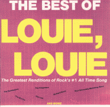
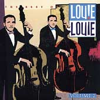

Заппа'zУх!Ой!
русский более или менее регулярный бюллетень для поклонников американского композитора
Frank'а Vincent'а Zappa'ы
Выпуск.10 (31 августа 1998)
Десять двойных в один стакан!
Что скрывать, отец всех мыслимых рацпредложений и инноваций лучший друг, Фрэнк Винсент Заппа, как и подобает гению, помимо всего прочего, был несравненным виртуозом перелицовки и перекройки чужого музыкального барахла. Инженер по извращению штампа и мастер-технолог пародийного цитирования.
Помнится, в 1994-ом консерваторский студент из Индианы Christopher Smith даже статью написал, тут же затерявшуюся, впрочем, вместе с иными школярскими экзерсисами того семестра в каком-то академическом ежеквартальнике "BROADWAY THE HARD WAY:" TECHNIQUES OF ALLUSION IN MUSIC BY FRANK ZAPPA", посвященную построчно-тактовому разбору дюжины номеров пластинки 1988 года, от Rhymin' Man:
Rhymin' Man
Tall and tan
Rhyme or reason
Play your hand -
Rhyme on this
{ascending piano/marimba chromatic scales}
Rhyme on that
{descending chromatic scales}
Oh, you naughty Democrat!
{Texture: Combines TV theme to "Twilight Zone" (early-60s science-fiction) &
"Frere Jacques" (nursery rhyme known to most American children):}
They say when Doctor King got shot,
{"Funeral March" evokes sorrowful death}
Jesse hatched an evil [awful] plot
{"Mission Impossible" mid-60s action-spy television theme}
Dipped his hands in the Doctor's blood,
{"Untouchables" early-60s television crime drame. Note literalism as well}
'N rubbed his shirt like playin' with mud
До финальной Jesus Thinks You're a Jerk
Jim and Tammy!
{"Louie Louie" [3 chord, archetypically-dumb mid-60s garage-band anthem]}
Oh, baby!
You gotta go!
You really got to go!
{modulation, with "Dixie" and "Rock of Ages" played simultaneously}
Просто море, море разливанное всякого рода отсылок, и прямых, и косвенных, не композитор, а кот ученый, пойдет налево "Марш гладиаторов" заводит, направо - "Louie Louie" говорит, в строгом согласии, конечно, с творческим замыслом и идеологической заостренностью.
Впрочем, из всего многообразия чужих нот, выловленных настырным Кристофером в скучноватом звуковом потоке Бродвея, стоит задержать внимание на паре аккордов, появление которых в общей кэ-вэ-энной мешанине альбома едва ли можно объяснить одним лишь прицельно-циничным насмешничеством агитационного периода очередной президентской кампании.
Речь, безусловно, о нескольких тактах Louie Louie
Jim and Tammy! Oh, baby! You gotta go!
Незамысловатой безделице (еще одного композитора из L.A.) Richard'а Berry, следы которой самодеятельный историк и коллекционер Eric Predoehl'а, нашел в тринадцати каталожных альбомах и трех официальных бутлегах FZ! Начиная, буквально, с самого первого (Freak Out!, 1966) и заканчивая последним прижизненным (Yellow Shark, 1993). Тут и двухсекундные цитатки ( "Florentine Pogen", "The Adventures Of Greggery Peccary"), и новые песни на мотив старой ("Ruthie Ruthie"), и просто "Louie Louie" на краснознаменном королевском органе Альберт Холла.
PLASTIC PEOPLE (YOU CAN'T DO THAT ON STAGE ANYMORE, vol.1)
| FZ: Now if you'll analyse what we're playing here, if you use your ear and listen, you'll learn something about music, you see? Louie Louie is the same as the other song with one extra note, you see...? They're... they're very closely related, and they mean just about the same thing. | ФЗ: Сейчас, если вы попытаетесь вникнуть в то, что мы играем, употребите ваши уши и станете слушать, наверняка, что-то да заметите в этой музыке. Есть еще одна песня точь-в-точь, как Луи Луи, с одной лишь добавочной нотой, замечаете...? Обе так... обе так похожи друг на дружку, и речь в них, собственно, об одном и том же. |
|
Frank Zappa |
Richard Berry |
| Plastic People You gotta go | Louie Louie, me gotta go. |
|
A fine little girl
She waits for me She's as plastic As she can be She paints her face With plastic goo And wrecks her hair With some shampoo |
A fine girl, she wait for me. Me catch the ship across the sea. I sailed the ship all alone. I never think I'll make it home |
| ... | ... |
| Plastic People You gotta go | Louie Louie, me gotta go. |
|
Me see a neon
Moon above I searched for years and found no love I'm sure that love will never be A product of Plasticity |
Me see Jamacan moon above. It won't be long me see me love. Me take her in my arms and then I tell her I never leave again. |
Какая, однако, привязанность, какое завидное постоянство, заставляющее Эрика, исследователя, С-Непроизносимой-Иностранной-Фамилией подозревать за этим нечто уж совсем темное, фрейдистское, достоевщину, шекспировщину какую-то, на вечном геологическом разломе "любовь-ненависть".
Что ж, думаю, предельный рационализм сарказмом и иронией напитанного сознательного Фрэнка Винсента Заппы не оставлял никаких шансов, его и без того не слишком уж глубоководному, по-американски свободному от лишнего холестерола подсознательному. Едва ли можно всерьез говорить о драме вечной амбивалентности, когда холодному разуму маэстро навяливали, собственно говоря, такие вот нечленораздельные по форме и неандертальские по содержанию откровения карибского морехода двоящемуся, троящемуся бармену Луи, сколько вас парни, блин, Луи:
|
В натуре |
По-нашенски |
|
Louie Louie, me gotta go. Louie Louie, me gotta go. A fine girl, she wait for me. Me catch the ship across the sea. I sailed the ship all alone. I never think I'll make it home. Louie Louie, me gotta go. |
Леха, Леха, моя должен катить. Леха, Леха, моя должен катить. Классная девочка есть ждать меня. Моя наняться корабль плыть за моря. Уплыл я один, Думал, что навсегда. Леха, Леха, моя должен катить. |
Какая, к черту, психопатология? Обыкновенный здоровый кретинизм обыденной жизни! Песнячок, который Р. Берри скоренько накидал на подвернувшуюся под руку салфетку в перерыве между концертными номерами в 55-ом, а в 1957 записал, поскольку B-сторону очередной сорокопятки надо было чем-то заполнять, шесть лет спустя становится динамитным хитом на всем пространстве от одного соединенного штатами моря до другого. Ополоумевшие радиостанции очередями выстреливают демо, с которым группа молодых халтурщиков The Kingsmen надеялась всего лишь работу получить в трюме лайнера с баром для цветных. Какое-такое Moderato-Allegro-Allegro pesante плюс Adagio, четыре компоненты - это перебор. Максимум - три. Три слова, три аккорда!
me gotta go
Безграничная жидкая тупость - источник вдохновения гения в современную эпоху культурной самообороны наступлением, тот самый неповторимый контекст белозубой, жизнерадостной повседневности, по которому всю жизнь фигурно, с наслажденьем вышивал Фрэнк Винсент Заппа младший.
Если в девятнадцатом веке каждый склонный к сумбурному изложению мыслей в бесконечных романах мистик обязан был в детстве хлебнуть помоев нищеты и унижений для будущего надрыва, то индустриальному творцу наших дней вполне хватает отхваченного в юности шевиота народного энтузиазма на будущее пижонское пальтецо. Для Фрэнка такой солью земли, картинкой в его букваре, отцовской буденновкой, оказался шедевр Ричарда Берри, Луи Луи, песня, кою он и его голодные бродячие музыканты шестьдесят четвертого, шестьдесят пятого должны были исполнять в каждом кабаке, их подрядившим вкус фастфуда звуком отбивать. За вечер раза четыре.
Леха, Леха, моя должен катить
Так сказать, базовая, системно-образующая вещица без знания, проникновения задором, огоньком которой, любой поклонник FZ лишь верхогляд, да пустозвон:-))).
Неудивительно в этой связи, что не кто-нибудь, а именно компания Rhino Records, известный партизан в минных полях концептуального постоянства нашего кумира, сподвиглась на такой абсолютно запповский по духу и букве художественно-производственный акт, как выпуск серии компактов Best of Louie Louie.
К настоящему времени выпущено два тома. Louie Louie - Best Of Various Artists и Best Of Louie Louie, Volume 2, каждый содержит десять версий трех куплетов-четырех припевов без единого, понятно, повторения. В буклете последнего сборника, кстати, обещание вскорости порадовать нас и Louie Louie III, в возможности чего можно не сомневаться, поскольку этот сверх-архетип рок-песни на сегодняшний день по числу существующих вариантов розлива уступает лишь дамскому сиропчику макартневского Yesterday. Согласно Eric'у Predoehl'у, в запасе у Rhino более тысячи разнообразных прочтений базовго рифа. Жирный культурный слой столетья.
Ну, а те же, что уже нарезаны, можно запросто заказать на www.cdnow.com, если, конечно, карточки наших инкомов еще принимаются к оплате на том берегу.
|
 |
В первом томе сам Ричард Берри с оригиналом, который FZ, кстати, находил забавным, тут же Вся королевская рать The Kingsmen, подарившая нации песню песен, а также церковный хор и университетский духовой оркестр, не иначе, как в порядке подготовки к мероприятиям по объявлению Луи Луи гимном штата Вашингтон. |
| К приятным сюрпризам второго я бы отнес лихо заметеленное нашими соотечественниками по-русски Луи Луи (банда Red Square) и еще одну заппа-связь - вариации на вечную тему George'а Duke'а и Stanley Clark'а |
 |
Суммарно - 51 одна минута полного ухода в ширь их страны родной. Наслаждение, сравнимое ну разве только с альбомом самого FZ, содержащим пятнадцать вариантов одной лишь незабвенной Шарлины или же телетрансляцией заключительного концерта программы Песня-98.
Увы, до альбома наследники еще не додумались, концерт бывает раз в год, а пластиночки хоть целый день гоняй.
Классная девочка есть ждать меня.
Человек! Еще два пива!
Искренне Ваш, Владимир Советов
http://www.arf.ru/
| Домой | Заппа'zУх!Ой! | Поиск | Хозяин |